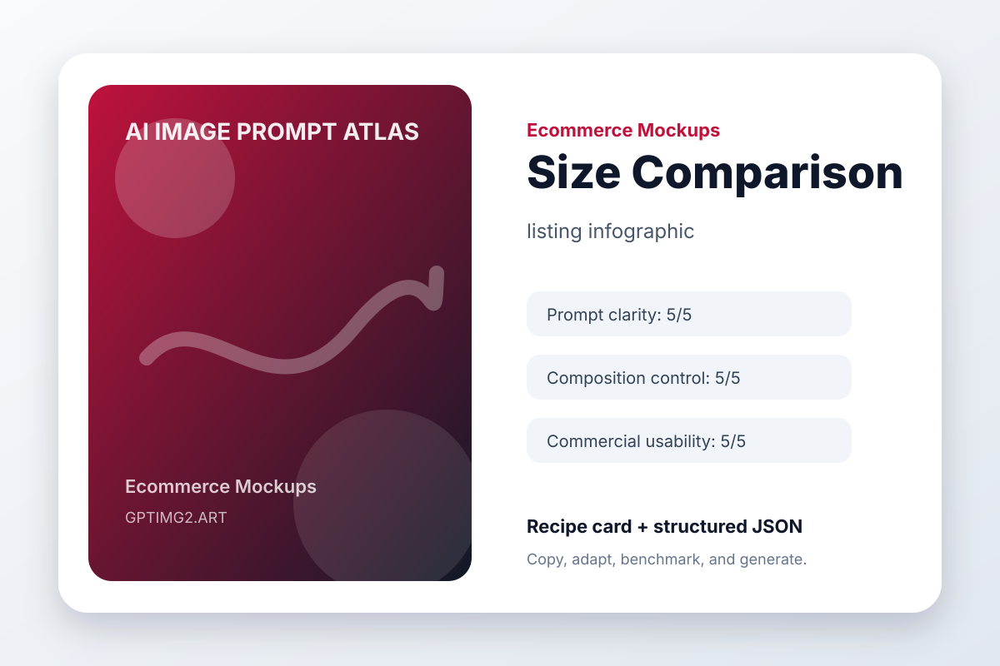

Ecommerce Mockups / easy
Size Comparison
listing infographic

Prompt
Create a polished listing infographic.
Subject: a product scale comparison next to a phone and hand silhouette.
Composition: clear focal point, intentional negative space, balanced depth, no clutter.
Lighting: soft professional lighting with realistic shadows and material detail.
Style: high-quality AI image generation result suitable for a public design portfolio.
Details: include accurate shapes, clean edges, coherent color harmony, and a result that still works at thumbnail size.
Constraints: avoid warped geometry, random text, extra logos, duplicated objects, messy reflections, watermark, and low-resolution artifacts.
Negative Instructions
watermark, unreadable text, random logos, warped hands or objects, duplicated subjects, messy background, low-resolution artifacts, unwanted typography
Why This Prompt Works
- The use case is declared before the visual style.
- The subject is specific enough to reduce model guessing.
- Composition and lighting constraints make the result easier to revise.
- Failure modes are named directly, which improves practical usability.
Variation Prompts
- Make a minimal listing infographic version with more whitespace.
- Make a bold social-media-ready version with stronger contrast.
- Make a premium editorial version with refined lighting and texture.
Recipe Metadata
| Category | Ecommerce Mockups |
|---|
| Use case | listing infographic |
|---|
| Input type | text prompt |
|---|
| Aspect ratio | 1:1 or 16:9 |
|---|
| prompt clarity | 5/5 |
|---|
| composition control | 5/5 |
|---|
| text accuracy | 3/5 |
|---|
| object consistency | 4/5 |
|---|
| commercial usability | 5/5 |
|---|
Try this workflow on GPTImg2